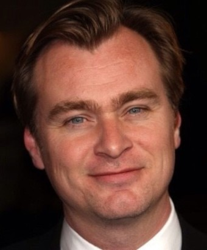

작가소개

크리스토퍼 놀란
- 출생 : 1970.07.30 영국
- 신체 : 181cm
- 가족 : 배우자 엠마토머스, 동생 조나단 놀란
- 데뷔 : 1998년 영화 '미행'연출
수상경력
-
2018
제38회 런던 비평가 협회상 영국작품상 (덩케르크)
2017
제30회 시카고 비평가 협회상 감독상
2015
제10회 맥스무비 최고의 영화상 최고의 감독상
2011
제16회 크리틱스 초이스 시상식 액션영화상
2011
제26회 산타바바라 국제영화제 모던 마스터상
2011
제63회 미국 작가 조합상 각본상
2010
BAFTA LA 브리티아나 어워드 올해의 예술인상
2009
제35회 새턴 어워즈 최우수 각본상
2009
제35회 새턴 어워즈 최우수 액션, 모험, 스릴러상
2005
제31회 새턴 어워즈 최우수 각본상
2005
제31회 새턴 어워즈 최우수 판타지영화상
2003
제23회 런던 비평가 협회상 올해의 감독상
2002
제7회 크리틱스 초이스 시상식 각본상
2002
제11회 MTV영화제 신인 제작자상
2001
제21회 런던 비평가 협회상 올해의 작가상
2001
제14회 시카고 비평가 협회상 각본상
2001
제17회 선댄스영화제 왈도 설트 각본상
2001
제27회 LA 비평가 협회상 각본상
2001
보스턴 영화비평가협회 각본상
1999
슬램댄스 국제 영화제 블랙 앤 화이트상
1999
디나드 영국 영화제 실버 히치코크상
1999
제28회 로테르담 국제영화제 타이거상
1999
뉴포트 국제영화제 최우수 감독상